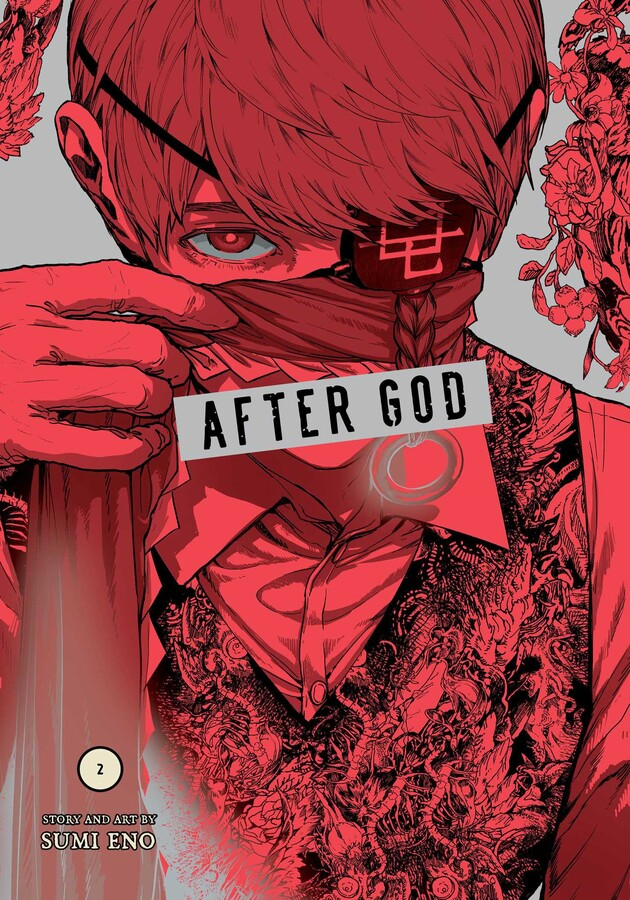
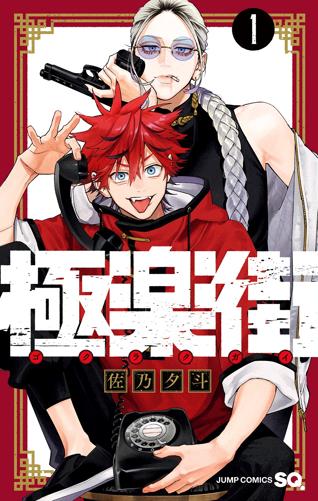
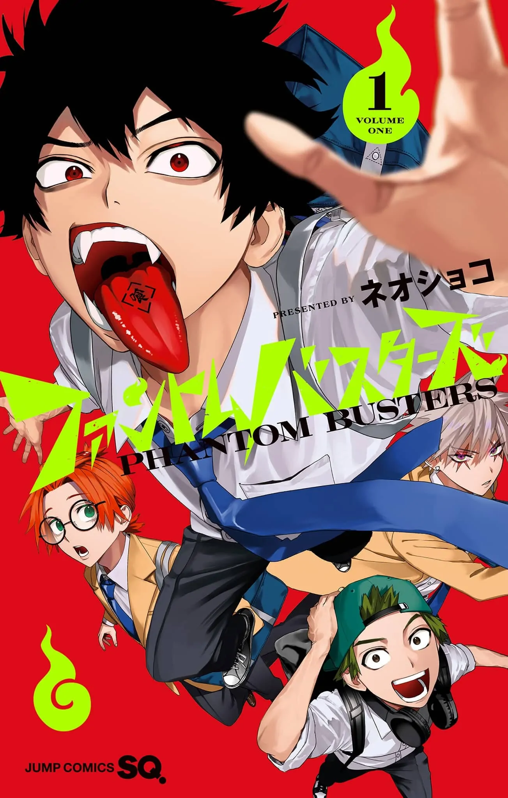
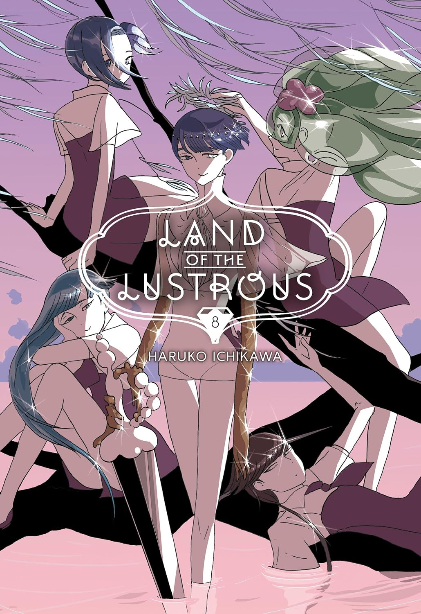
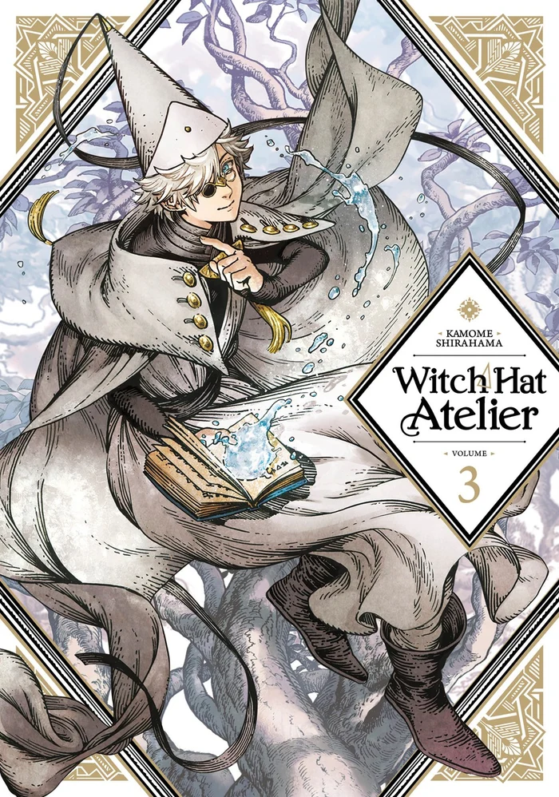
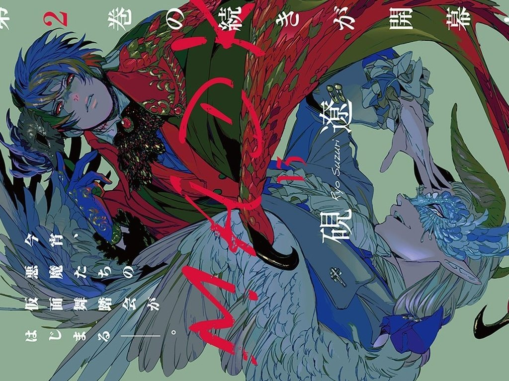
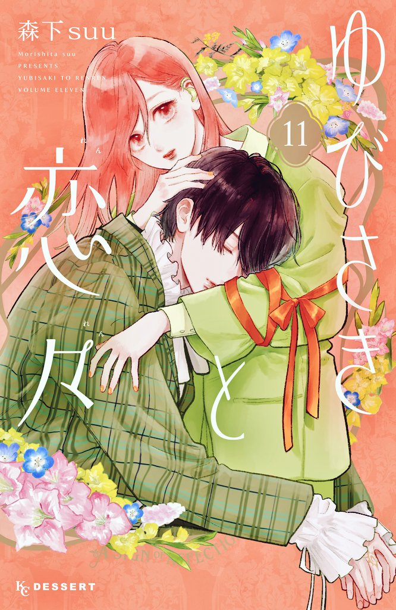
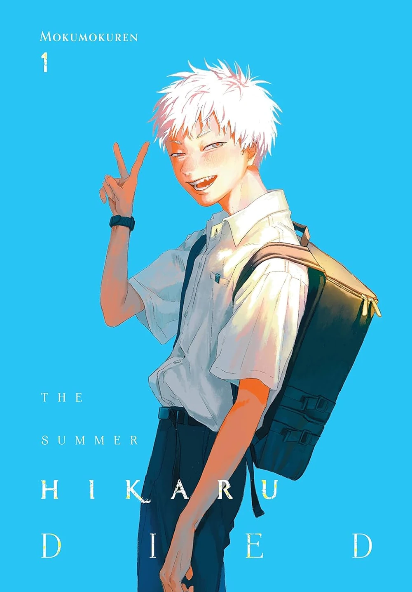
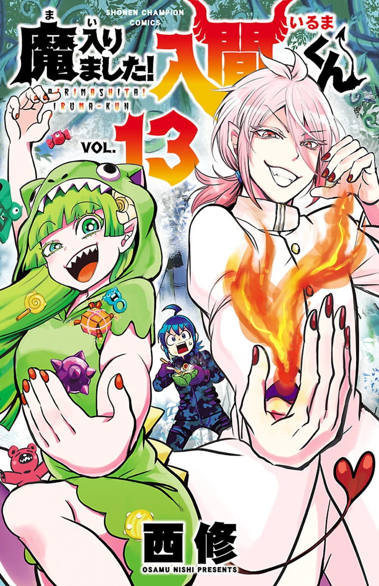

manga
mangas to get to know me









More mangas I love:
- Fake Fact Lips
- Sleeping on Paper Boats
- Kimi No Yoru Ni Fureru
- Brutal
- Cross Play Love
- Black Butler
- Diamond no Ace
- Seraph of the End
- The Fragrant Flower Blooms With Dignity
- Bless
- Lullaby of the Dawn
Current subjects of my character obsession:
- Sakura Haruka (Wind Breaker)
- Umemiya Hajime (Wind Breaker)
- Reno Ichikawa (Kaiju No. 8)
- Narumi Gen (Kaiju No. 8)
My ideal types as portrayed in mangas:
- Izumi Miyamura (Horimiya)
- Itsuomi Nagi (A Sign of Affection)
- Mei Sashinami (Tashiro-Kun, Why’re You Like This?)
My fave characters in Blue Lock:
- Isagi Yoichi
- Chigiri Hyoma
- Yukimiya Kenyu
- Mikage Reo
Oh how I love trans characters
- Grell Sutcliff (MTF, Black Butler)
- James Bond (FTM, Moriarty the Patriot)